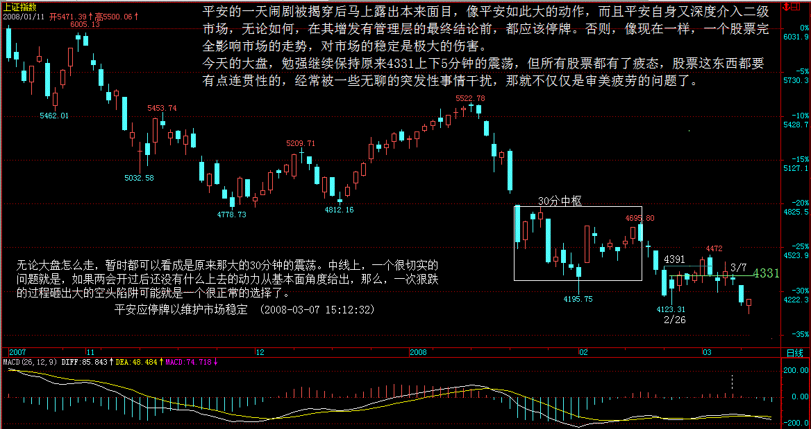
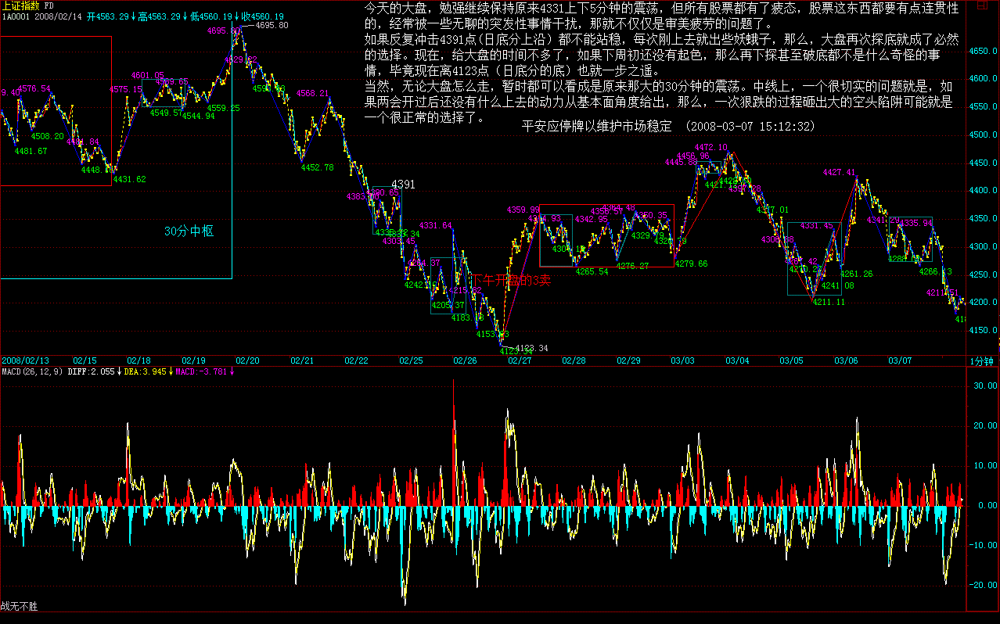
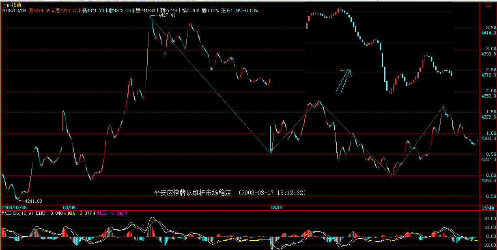
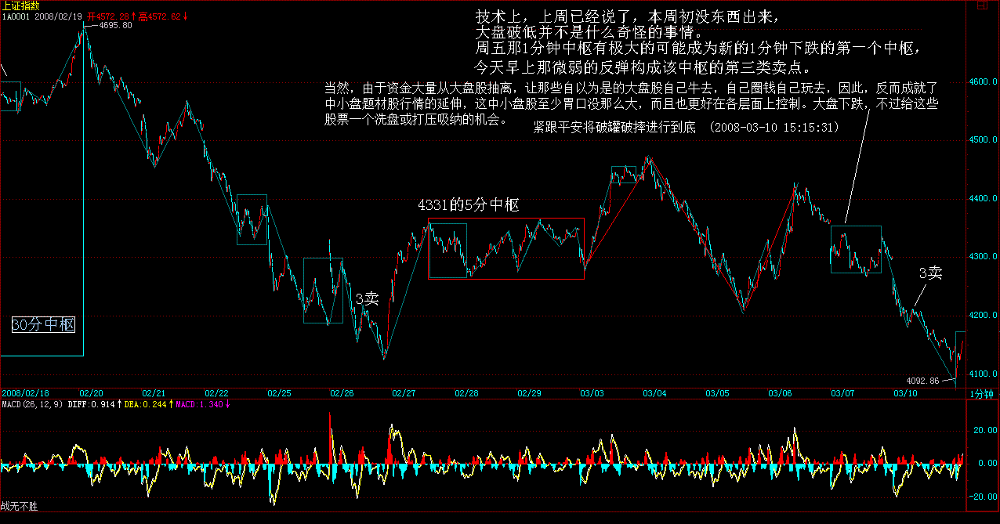
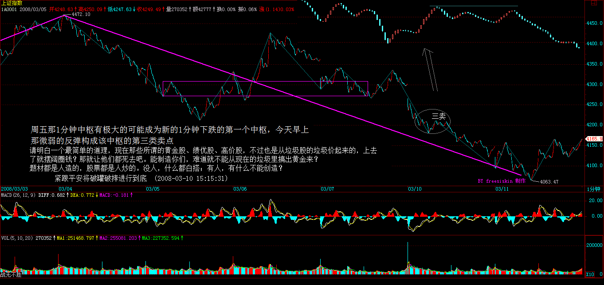
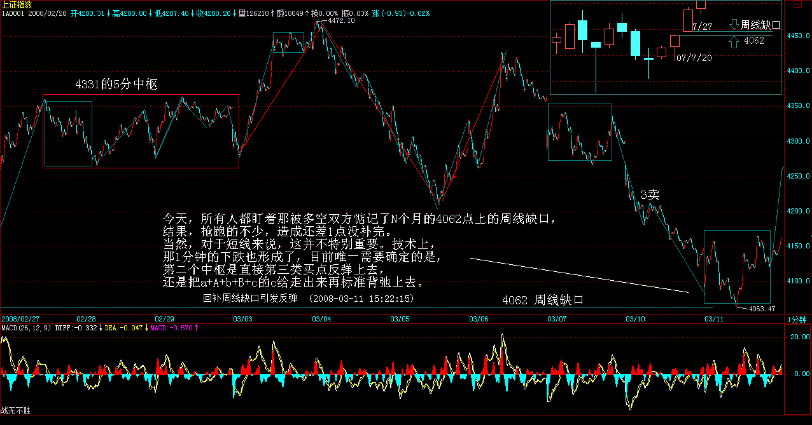
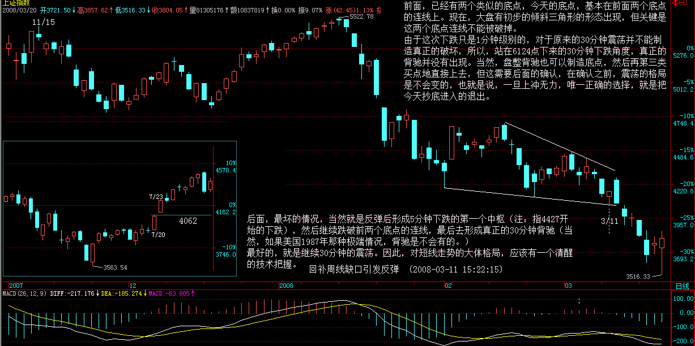
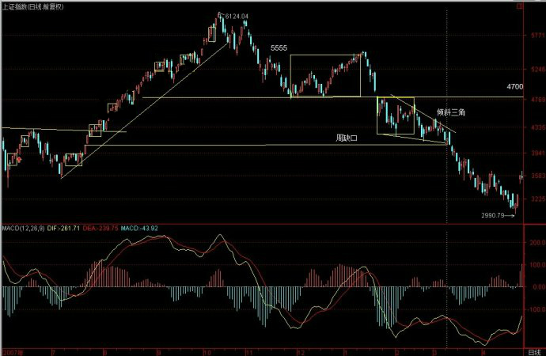

Walter:
- 走势必完美对应的是一种最特殊、最强有力的唯一分解；
- 唯一分解就可以完全分类；
正文
(2008-03-06 16:10:18)
原文网址：http://blog.sina.com.cn/s/blog_486e105c01008lt8.htm
如果是单纯地唯一分解，并不能显示本 ID 理论真正厉害之处，因为走势必完美对应的是一种最特殊、最强有力的唯一分解，这看似毫无规律的市场走势竟然有这样完美的整体结构，这才是最牛的地方。
最完美的系统，肯定是自然数了，为什么？因为自然数具有诸多的唯一分解方式，例如素数的分解，但还有一种最牛的分解，就是对于幂级数的唯一分解，因为有这种分解，所以自然数有记数法。例如，2 的幂级数对应的唯一分解就是 2 进位，而 10 的就是 10 进位。如果没有这种分解，我们就不能用记数法记录自然数了。
正因为这分解如此有力，所以我们都会觉得很平常，似乎自然数有记数法是天经地义的，其实，这才是自然数整体结构中最牛的地方。而一般的数系，一般是没有这种性质的。
同样， 本 ID 的理论给出的递归函数，完美地给出市场走势一个类似记数法一样的唯一分解，也就是说，本 ID 揭示了看似毫无规律的市场走势竟然有着和自然数有着类似的整体结构，完全超越一般的想象，这才是真正最牛的地方。
正因为本 ID 的理论揭示了看似毫无规律的市场走势有如此完美的整体规律，所以才有了其后一系列的操作可能。这才是走势必完美真正关键的地方。
因此，级别在本 ID 理论中就极端关键了。为什么？因为本 ID 的递归函数是有级别的，是级别依次升大的。所以，搞不明白级别，根本就不明白本 ID 的理论。
那么，这样一个整体结构有什么厉害的结论呢？这可以推演的东西太多了，随便说一个，就是区间套方法的应用。如果市场走势没有本 ID 所揭示的整体结构，那么区间套是不会存在，也就是没有操作意义的。因此，区间套的方法，就是走势必完美的一个重要的应用。有了区间套，买卖点的精确定位才有可能，也就是说走势必完美的存在导致了买卖点可以精确定位，这显然是操作中最牛的一种方式了。
从 1 分钟一直到年，对应着 8 个级别，其实，这些级别的名字是可以随意取的，只是这样比较符合习惯。否则说级别 1、2 的，容易搞不清楚。
当然，加上线段与笔，可以有更精细的分解，但一般来说没这必要。
任何走势，都可以在这些级别构成的分解中唯一地表达。但一般来说，对于一般的操作，没必要所有分解都搞到年、季、月这么大的级别，因为这些级别，一般几年都不变一下。你看，从 6124 点下来，N 个月了，还在 30 分钟级别里混，所以，一般来说，1、5、30 分钟三个级别的分解，就足以应付所有的走势。当然，对于大点的资金，可以考虑加上日级别的。
也就是说，任何走势，都可以唯一地表示为 a1A1+a5A5+a30A30 的形式 （娇注：a- 连接段 A- 中枢）。而级别的存在，一个必然的结论就是，任何高级别的改变都必须先从低级别开始。例如，绝对不可能出现 5 分钟从下跌转折为上涨，而 1 分钟还在下跌段中。有了这样一个最良好的结构，那么，关于走势操作的完全分类就成为可能。
完全分类，其实是一个超强的实质性质。学点现代数学就知道，绝大多数系统并不一定存在完全分类的可能，而要研究一个系统，最关键的是找到某种方式实现完全分类，说得专业点，就是具备某种等价关系。
而由于走势必完美，所以走势就是可以完全分类的，而所有的分类，都有明确的界限，这样，任何的走势都成为可控的。这种可控并不需要任何人的预测或干预，而是当下直接地显现的，你只需要根据这当下的显示，根据自己的操作原则操作就可以。
注意，完全分类是级别性的，是有明确点位界限的。而不是粗糙的上下平的无聊概念。也就是说，本 ID 的理论完全是数量化的，因此而就是精确化的，里面不存在任何含糊的地方。
所以，明白上面这些，这样就有了一个大概的框架，而不至于迷失于理论中了。
平安应停牌以维护市场稳定 (2008-03-07 15:12:32)
原文网址：http://blog.sina.com.cn/s/blog_486e105c01008m2q.html
平安的一天闹剧被揭穿后马上露出本来面目，像平安如此大的动作，而且平安自身又深度介入二级市场，无论如何，在其增发有管理层的最终结论前，都应该停牌。否则，像现在一样，一个股票完全影响市场的走势，对市场的稳定是极大的伤害。
今天的大盘，勉强继续保持原来 4331 上下 5 分钟的震荡，但所有股票都有了疲态，股票这东西都要有点连贯性的，经常被一些无聊的突发性事情干扰，那就不仅仅是审美疲劳的问题了。
如果反复冲击 4391 点 ( 日底分上沿 ） 都不能站稳，每次刚上去就出些妖蛾子，那么，大盘再次探底就成了必然的选择 。现在，给大盘的时间不多了，如果下周初还没有起色，那么再下探甚至破底都不是什么奇怪的事情，毕竟现在离 4123 点（ 日底分的底 ）也就一步之遥。
当然，无论大盘怎么走，暂时都可以看成是原来那大的 30 分钟的震荡。中线上，一个很切实的问题就是，如果两会开过后还没有什么上去的动力从基本面角度给出，那么，一次狠跌的过程砸出大的空头陷阱可能就是一个很正常的选择了。



大盘可能面临的最坏情况就是，这里反复折腾不出结果，然后创业版出来，热钱都跑过去，这里变成一座围城，无聊地在几百点的空间上耗上 N 个月甚至一年。这种情况并不是不可想象的。
当然，现在给多头的时间还有，多头还有反击的机会，就算创新底，也不是世界末日。现在的问题是，如果一些根本性的问题不解决，就算盘住了，那么上涨的理由呢？难道上涨就为了给平安之流去表演？上涨的空间如何打开，这需要基本面的支持，而这基本面现在又在哪里？
周末，不说股票了。
先下，再见。
紧跟平安将破罐破摔进行到底 (2008-03-10 15:15:31)
原文网址：http://blog.sina.com.cn/s/blog_486e105c01008my2.html
现在最大的问题是什么，用脚指头都能想明白。但管理层那已经成为滑稽表演的基金新发依然如故。那么，大盘也只好紧跟平安将破罐破摔进行到底了，没有比今天创新底更能配合管理层基金连发的滑稽与幽默了。
管理层大概认为，只要他们批准了，那些基民（一个比股民还恶心的名字，让人想起饥民）就会如饥似渴地抢光他们的施舍。但现实是什么？一个过于滑稽的举动，只能让人远离，连唾弃的兴趣都没有。
市场是最现实的，有行情，有上涨理由，资金不请自到，否则，自己画饼自己玩去吧。本 ID 已经多次说明，就算现在减印花税，也没用。为什么？因为没有上涨的理由，上涨难道是为了再去成就平安之流？
在这如此影响市场的最基本融资规范没有解决前，管理层如此地反应，确实只能让市场寒心。现在市场需要的是明确的法规，一个明确的预期，否则，所有的上涨都不过是短促的反弹，不能构成真正的行情。
技术上，上周已经说了，本周初没东西出来，大盘破低并不是什么奇怪的事情。周五那 1 分钟中枢有极大的可能成为新的 1 分钟下跌的第一个中枢，今天早上那微弱的反弹构成该中枢的第三类卖点。


当然，由于资金大量从大盘股抽离，让那些自以为是的大盘股自己牛去，自己圈钱自己玩去，因此，反而成就了中小盘题材股行情的延伸，这中小盘股至少胃口没那么大，而且也更好在各层面上控制。大盘下跌，不过给这些股票一个洗盘或打压吸纳的机会。
鉴于目前这么滑稽的氛围，资金只能以更大的投机去获取更大的利润。大盘股的圈钱投机竟然如此堂而皇之，那么，大中小资金也可以这么玩，选择各自适合的投机品种，让市场继续分裂，让题材投机的风暴来得更猛烈，这只能是还想在场里折腾的资金唯一的选择。
今天，大跌，认购权证一反常态地暗潮涌动，就是这种新的投机行为一个很好的序幕。而今天，又有不少中低价股开始有新资金注入，借指数跌而潜伏进入，本来就是很正常的事情。
一句话，让投机来得更猛烈些。这种游戏当然不适合所有人，没这种投机细胞的，就小板凳看着，等基本面有根本改变再说。有的，当然睁大眼睛，发现一切可投机的机会，选择最适合自己的去投机，劫一票换一地。资金需要收益，资金很饿，总不能一季度没完就不干活吧。
请明白一个最简单的道理，现在那些所谓的黄金股、绩优股、高价股，不过也是从垃圾股的垃圾价起来的，上去了就摆阔圈钱？那就让他们都死去吧。能制造你们，难道就不能从现在的垃圾里搞出黄金来？
题材都是人造的，股票都是人炒的。没人，什么都白搭；有人，有什么不能创造？
先下，再见。
夜郎自大的中国大机构 (2008-03-10 16:21:13)
原文地址：http://blog.sina.com.cn/s/blog_486e105c01008mz3.html
本来想写课程，不过还是先写写这个。
中国的大机构，在 N 年还是很蔫的。但因为出身正，几年光阴，现在都牛得不得了了。世界也 500 强了不少，个个鼻孔都插上了大葱。
有那样的环境、那样的资源，任何一个只长了一边脑子的，都可以干出这样的成就。但这些机构开始膨胀，插上大葱就满世界晃悠去了。
结果怎么样了？世界期货市场上，最喜欢看到的是谁？当然是中国的大机构们。大家都开心地等着，看，那送钱的又来了；世界的股权市场上，现在最喜欢看到的是谁？当然是中国的大机构们，看，那烧钱的又来了。
真是很难想起，这些大机构们，在世界金融市场上什么时候干过一件让人觉得是人干的事情？一个律师就可以在全世界最大之一的公司中坐阵中军，请问，这位先生，在联办的时候，在后面一系列的资本市场活动中，除了夸夸其谈，有实际操作过任何一个大的市场活动吗？
这市场是干出来的，不是谈出来的，更不是读出来的。
本 ID 早给这些机构一个最好的定位，就是继续窝里横，别出来丢人现眼了，他们无论从人才到结构，都完全是一个可笑的闹剧。
所以，本 ID 一直鼓吹，要把中国的窝给做大，让肉烂也烂在自己锅里，就是本 ID 对这些机构的水平一点信心都没有，去当炮灰，还不如当缩头乌龟。只要乌龟窝够大，成为世界第一大，让全世界的非乌龟都只能往这跑，那缩头乌龟也能成忍者神龟。
可惜，我们的机构们牛惯了，他们竟然还想圈国内的钱去玩他们的全球化游戏。本 ID 可以断言，去一个死一个。在金融领域，可不是单纯的低级制造业。用中国人民的血汗去让他们自己去爽，去一时炫耀他们所谓的成就，可能吗？
本 ID 一直旗帜鲜明地反对一切企图把中国的资金往外搞的行为，从那什么无聊直通车到什么搞笑 QDII。事实证明，直通车已经成了闹剧，QDII 已经成了悲剧，难道我们还希望我们的大机构继续胡闹下去吗？
你们向上爬的水平当然是有的，但你们在国际市场运做资本的水平，不是插上大葱就好使的。这就是中国大机构的现实状况，别插了大葱满世界晃悠了，回圈里去吧。
回补周线缺口引发反弹 (2008-03-11 15:22:15)
原文网址：http://blog.sina.com.cn/s/blog_486e105c01008n85.html
今天，所有人都盯着那被多空双方惦记了 N 个月的 4062 点上的周线缺口，结果，抢跑的不少，造成还差 1 点没补完。当然，对于短线来说，这并不特别重要。技术上，那 1 分钟的下跌也形成了， 目前唯一需要确定的是，第二个中枢是直接第三类买点反弹上去，还是把 a+A+b+B+c 的 c 给走出来再标准背弛上去 。( 如果没有 c 段，就需要 B 的三买来确认，如果确认，就是盘整背驰直接反弹 )

前面，已经有两个类似的底点，今天的底点，基本在前面两个底点的连线上。现在，大盘有初步的倾斜三角形的形态出现，但关键是这两个底点连线不能被破掉。
由于这次下跌只是 1 分钟级别的，对于原来的 30 分钟震荡并不能制造真正的破坏，所以，站在 6124 点下来的 30 分钟下跌角度，真正的背驰并没有出现。当然，盘整背驰也可以制造底点，然后再第三类买点地直接上去，但这需要后面的确认，在确认之前，震荡的格局是不会变的，也就是说，一旦上冲无力，唯一正确的选择，就是把今天抄底进入的退出。
后面，最坏的情况，当然就是反弹后形成 5 分钟下跌的第一个中枢（注：指 4427 开始的下跌），然后继续跌破前两个底点的连线，最后去形成真正的 30 分钟背驰（当然，如果美国 1987 年那种极端情况，背驰是不会有的。）
最好的，就是继续 30 分钟的震荡。因此，对短线走势的大体格局，应该有一个清醒的技术把握。


个股方面，你看，一反弹，冲在前面的基本都是 10 元上下的所谓垃圾股票，以及前期强势的板块：创投、农业、军工、消耗品等等。所以，市场的资金分布格局并没有变化，这种情况要维持相当时间。
今天的消息面，其实并不好。特别是某副主席，十分不地道地说什么股市不是谁都能来的。这话，在目前这时候说合适吗？对那些已经来了并受到伤害的人，难道不是风凉话吗？这种话，难道应该出自管理层之口？
所以，现在的大盘并不缺乏反弹、震荡，但真正的上涨理由在哪里？管理层首先都不给一个表率，市场能有信心吗？
更重要的一点，一定要知道，这市场不能靠任何人，包括管理层，一定只能靠自己的技术和心态，你足够强，谁都打倒不了你。
本 ID 最讨厌那些哀求管理层救市的言论，你爱救不救，我们不是你的犯人和奴仆，你们的工资还是我们的税收所支付的，你没教养，对市场真正的主人出言不逊，那只能证明管理层里的人员素质并没有达到我们的税收所供养所应该达到的水平。
有人当官老爷当惯，证监会的人，首先好好去学习，什么叫为民型政府，想想你们这个部门离这个要求有多远。别以为你们是谁，上帝式地施舍全国 N 亿的投资者，你们配吗？
市场搞不好，谁该给纳税人负责，这才是真正的问题所在！
先下，再见。
让人无话可说的管理层 (2008-03-11 16:23:53)
原文网址：http://blog.sina.com.cn/s/blog_486e105c01008n8p.html
有了昨天的帖子，按照本 ID 的性格，一定要去究底穷源的。今天，我们就用最理性的分析，来说说这让人无话可说的管理层 2007 年以来的表现。
显然，2007 年后的市场表现，完全超越了管理层的想象力，因为他们根本就没有深刻理解这轮所谓流动性过剩制造的大行情的历史性意义。
本 ID 肯定是最早也是极少数坚决反对有所谓流动性过剩的人，因为，所谓的流动性过剩，不过是针对相应的池子说的。如果你只是一个夜壶，一头猪就可以让你流动性过剩；而如果你是太平洋，又何来流动性过剩？
请问，中国，一个要成为世界最强大资本大国的国家、一个要成为世界经济领导者的国家，难道只有一个夜壶大小的池子对面对所谓的流动性过剩吗？难道不应该把我们池子变成太平洋去吸纳全世界的资金吗？
问题是，我们的管理层有没有把中国的池子变成太平洋的远见和具体的策略。而事实上，面对所谓的流动性过剩，我们的管理层采取了一种最没前途，最没技术含量、最可笑的方式。那连续的加息、调准备金等等，成了一个毫无技术含量的世纪大笑话。
而管理层所有金融手段换来的结果却是，不但投机潮没有被阻止，不想见到的通胀反而不请自来。
更可笑的是，作为管理层重要智囊的某著名经济雪茄，曾不无得意地把他的设计公开，说只要与美国保持多少的息差，人民币升值的速度再保持多少，那就如何如何美好新世界了。而不到两年，事实就如此残酷地摆在面前，那息差鬼使神差地从巨大的正变成负的，而且有继续扩大的趋势。他们一相情愿设计的玩意，被国际金融残酷现实彻底给玩意了。
请问管理层，为什么有时间搞这些可笑的玩意，却没有时间去真正把我们的池子做大？
对付资产价格的过快增长，一个最简单的办法就是增加供应量，这是用脚趾甲都能想明白的道理。而我们的管理层，从 530 的半夜鸡叫到直通车的闹剧，百般折腾，结果还是没压制住这上涨狂潮，为什么？因为方法根本不对路。而这些无聊招数不仅无效，而且有害。例如，印花税闹剧只维持了几天，最终大盘又从 4300 点到了 6100 点，使得 530 成了一个有着巨大心理破坏却完全无用的闹剧。
至于 530 的决策过程，更是一个悲剧。但更可悲的是，现在讨论重新把印花税减下来时，却开始大走所谓法律途径，又提案又如何的。请问，530 有必要的法律程序吗？难道有法律规定，加税可以一人拍脑袋就决定，而减税就需要层层通过走程序？在任何国家，关于税收的调整都是最重要的民生问题，都必须得到立法机关等等程序才能得以实施，而 530 我们得到的是什么？
不用讳言，530 永远是中国资本市场发展历史中耻辱的一页。
基本温饱住行等当然是重要的民生问题，但如果中国的民生问题的水平就停在这阶段，那是历史的悲剧。必须正视的是，民生问题也是有层次的，更高层次的民生问题，站在历史的角度，更为重要。而我们现在的所谓低级水平的民生问题，归根结底，是在补课。
但在任何国家，最重要的民生问题，归根结底，就是经济的稳定增长。一个经济出现问题的国家，任何的民生问题都是废话。经济发展，才是最重要的民生。
本来，我们有了一个强烈的势，一个强大资金流与信心流制造的趋势，让我们得以快速解决大量的问题。但，我们的管理层并没有驾御这个趋势，而是用了一个相反的错误策略，去扼杀了这个难得的趋势，那些本该解决的问题，一个也没解决，却因此留下了更可怕的问题。
这就是管理层 2007 年的成绩单。
最可笑的是，用脚趾甲都应该知道，现货没搞好，期货根本没有基础。而我们的管理层，一方面被市场的趋势搞得方寸大乱（想想那些直通车、QDII、530 等痉挛式的决策），另一方面又超英赶美式地大力推进所谓的期货，这世界的可笑，大概最高程度也就是如此了。
无疑，我们错过了一次轻松解决大问题的机会，因此，我们必须为此付出代价。
但更重要的是，我们现在面临一个更严重的问题。如果说，2007 年，我们在虚拟经济层面上错失了点什么，并不至于有太大的影响，那么，这个抉择，在 2008 年将出现在实体经济的层面。
一旦在实体层面出现错误的抉择，后果是什么，本 ID 都不想多说了。
说实话，本 ID 一定信心都没有，本 ID 希望自己错了，但事实从来都证明，在经济问题上，本 ID 错的机会很少。
对管理层，本 ID 无话可说。
我的苹果。